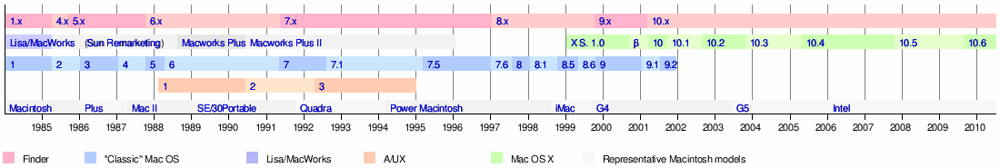
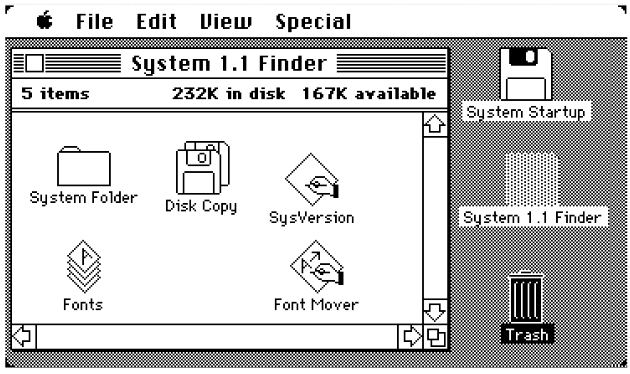
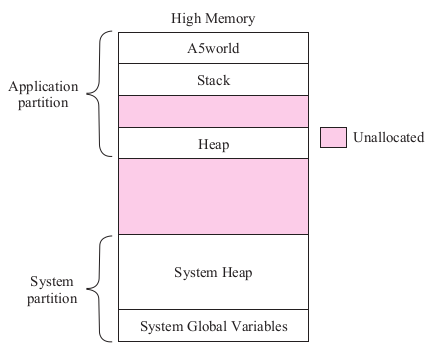
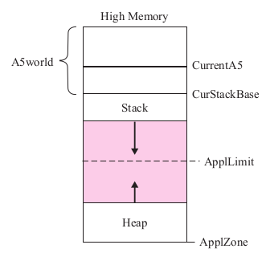
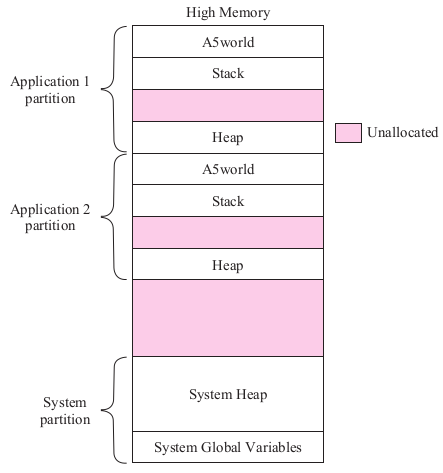
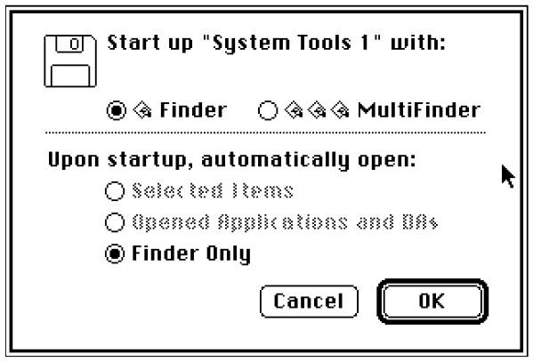

S.O. Multitarea Monousuario
MacOS
S.O. de Apple

Timeline de los S.O. de Apple
MacOS System 1
Barras de menú, menúes contextuales, el concepto de arrastrar-soltar y la manipulación directa de elementos.
Solo ejecutaba una aplicación a la vez
GUI de System 1
GUI System 1
Memoria en System 1
Layout de Memoria en System 1
Memoria en System 1
Partición de Aplicación en System 1
MacOS System 2
Switcher para elegir entre aplicaciones.
Carpetas anidadas, el comando "Apagar".
Soporte para impresoras y conexiones AppleTalk.
Memoria en System 2
Particiónes de Aplicación en System 2
MacOS System 3
Sistema de archivos HFS.
Soportes a nuevas tecnologías como SCSI y AppleShare.
Trash "bulging“.
MacOS System 4 / 5
Multitarea cooperativa con Multifinder
Discos rígidos de más de 32MB.
MacOS System 6
Puede correr aplicaciones en 24/32 bits
Y2K compatible
MacOS Sistema 7
Elimina el finder (solo queda multifinder)
Memoria virtual usando paginación bajo demanda.
Soporte CPU PowerPC
Dispositivos E/S PCI
MacOS Sistema 8
Multitarea mejorada (SMP), copia en segundo plano.
Sistema de archivos HFS+.
Temas de la GUI.
Soporte Unicode.
Demo MacOS
Bibliografía
- Elmasri - S.O.: Un enfoque en espiral.
- Capítulo 5: Secciones 5.1 a 5.10
https://es.slideshare.net/DamianGordon1/operating-systems-a-history-of-macos
https://media.timetoast.com/timelines/mac-os-01f437e7-7ec7-4698-83f6-00b1aed3c4e5
Gracias!
https://sofrcu.github.io/